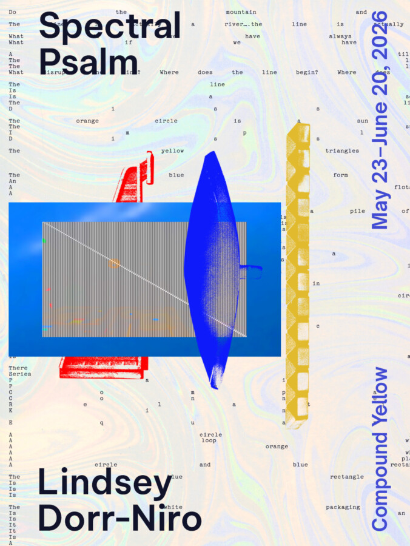

Lindsey Dorr-Niro: Spectral Psalm
Spectral Psalm
A Solo Exhibition by Lindsey Dorr-Niro
On View: May 23 – June 20, 2026
Opening Reception: May 23, 2-6 PM
Compound Yellow is pleased to present Spectral Psalm, a solo exhibition by Chicago-based artist Lindsey Dorr-Niro. The exhibition opens on May 23 and will remain on view through June 20, 2026.
Spectral Psalm is an expansive installation that engages processes of world-building and reconfiguration. Emerging as a second iteration of a prior body of work, the project transforms documentation into generative material. A technical glitch within a filmic archive produced a series of abstractions that, alongside ongoing inquiries into the nature of order, became the catalyst for this reimagined constellation.
Foregrounding failure as a generative condition, Spectral Psalm explores emergence, transformation, and the instability of control. The work unfolds as a stream-like structure of experiential inquiry, integrating film, text, sound, and spatial intervention. A central film serves as both source and guide, accompanied by narration (as both audio and printed text), a musical score by Zander Raymond, and a poster by Sonnenzimmer.
The installation extends beyond a static exhibition, activating Compound Yellow as a site for gathering, reflection, and embodied inquiry. As a kind of stage, it hosts a series of related activations incorporating guided contemplation, poetry, conversation, and live performance.